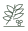
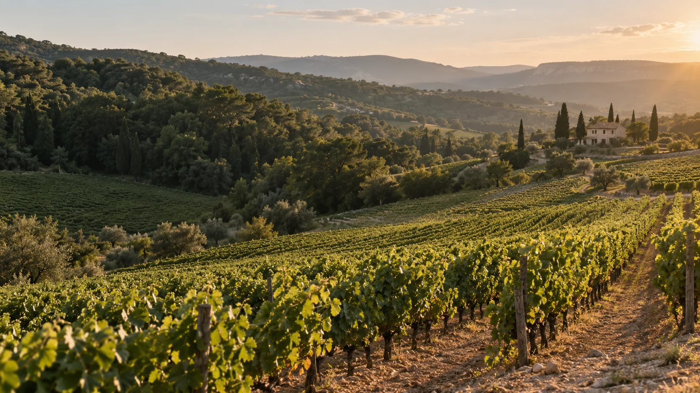
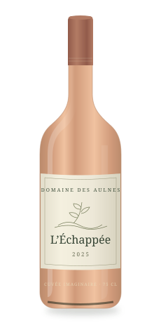
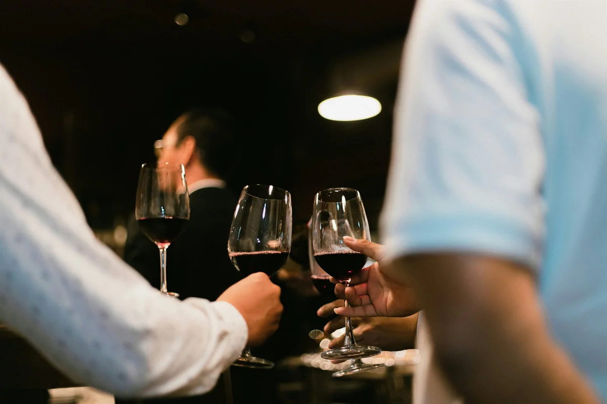
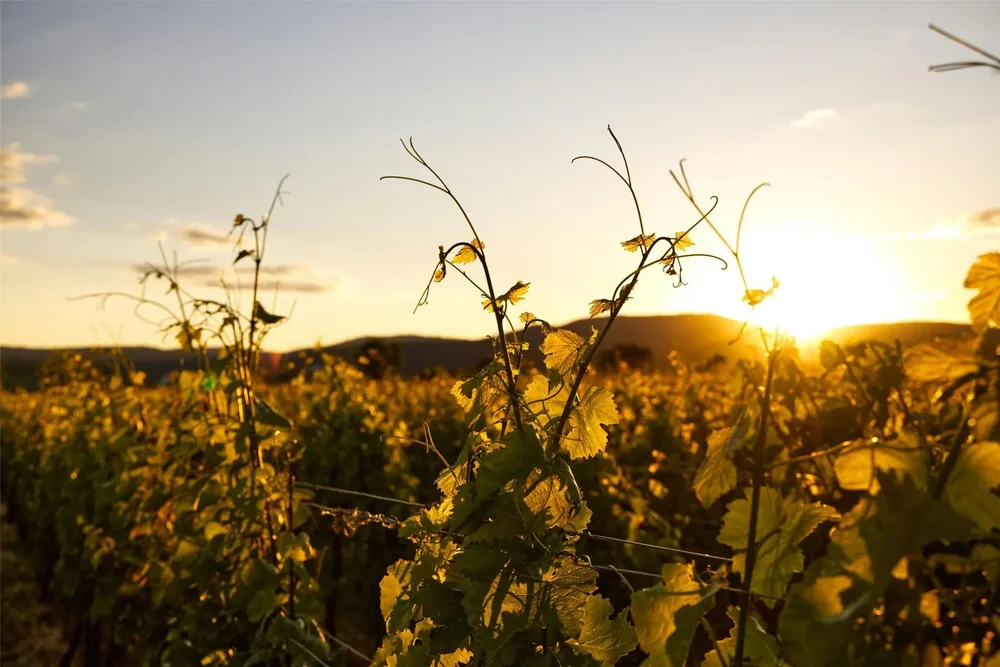

LA PROFONDEURN° 01
ROUGE · 2024 · 75 CL
La Roche
Du fruit, du relief, du caractère.

DOMAINEdes Aulnes
UNE TERRE, DES VINS, DES LIENS
Des vins qui racontent un lieu.
Et des rencontres qui lui donnent vie.
Il y a des lieux que l’on découvre.
Et d’autres que l’on garde en soi.
Les Aulnes, c’est l’idée d’un domaine à taille humaine. Des rangs de vigne, une table ouverte, le plaisir de faire découvrir ce que l’on aime. Une histoire imaginée pour vous montrer tout ce qu’un site peut raconter.
L’expérience du domaineLe goût du lieu
Le soin du geste
Le plaisir d’accueillir
ROUGE · 2024 · 75 CL
Du fruit, du relief, du caractère.

BLANC · 2025 · 75 CL
Un éclat vif, une finale délicate.

ROSÉ · 2025 · 75 CL
La légèreté des beaux jours.
Cuvées et prix TTC illustratifs. Le panier est une simulation : aucun achat ni paiement.

LE VIN EST AUSSI UNE RENCONTRE.03 PRENDRE LE TEMPS
Passer la porte du chai. Comprendre un geste.
Mettre des mots sur ce que l’on goûte.
Et laisser la conversation faire le reste.
Expérience et tarif fictifs · Réservation simulée
Quelques pages pour prolonger la découverte.

Observer, accompagner, recommencer.
Une bouteille, un plat, une bonne compagnie.
Dans ce domaine imaginaire, le carnet accompagne le rythme de la vigne : la taille en hiver, le réveil des bourgeons au printemps, l’observation du raisin en été et le choix de la récolte. Sur votre site, cet espace raconterait vos propres gestes et vos choix, avec vos mots et vos photographies.
Les notes fruitées d’un rouge, la vivacité d’un blanc ou la fraîcheur d’un rosé offrent autant d’occasions d’explorer un accord. Ici, les cuvées sont imaginaires. Sur votre site, ces pages pourraient présenter vos conseils de service, vos recettes et les occasions auxquelles vos vins se prêtent.